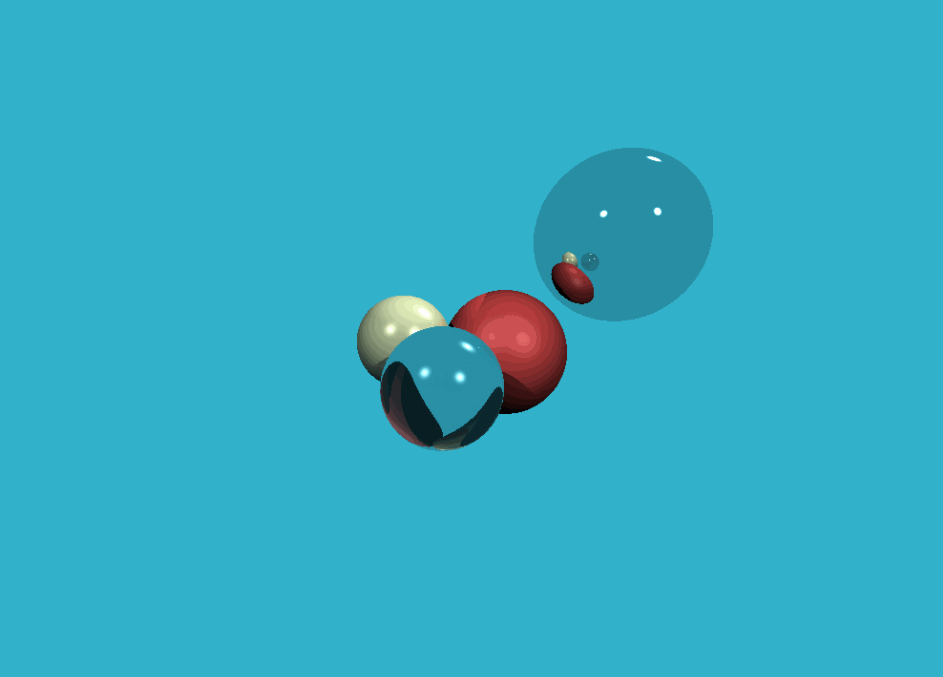
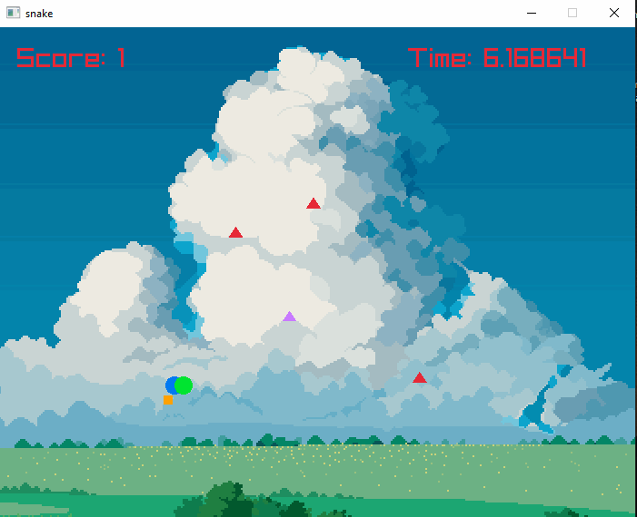

Weston Lane
Computer Programmer | Computer Graphics


RayCasting Engine: This is a raycaster for a classic style fps game. It is going to be my final project for my computer graphics course this semster. I would like to
continue development on it afterwards to see where it goes.
 I wanted to embark on this project to see how classical rendering was done on these games and to give me a foundation
in using modern OpenGL.
I wanted to embark on this project to see how classical rendering was done on these games and to give me a foundation
in using modern OpenGL.
I am using OpenGL with my own abstraction layer for the VBOs, EBOs, VAOs, and Shaders. This project has been an exercise in understanding OpenGL more than anything but I have also learned much more, such as map projection, ray casting, batch rendering, and ray intersection techniques. Soon I will add textures, enemies, and weapons. I also want to port this to WebGL and get it working on this website.
Course Planner: This is a course planner I made with C++ and Imgui. I wanted to plan my next few acedemic semseters in a consice, visual way.
 I could have just used Microsoft Excel but why not just make it myself. Continued work will be on including serialization for saving and loading files.
I could have just used Microsoft Excel but why not just make it myself. Continued work will be on including serialization for saving and loading files.
Each cell holds a text value while every other column holds the credit amount for that course which is totalled in the bottom left. There are individual bottons to add or delete rows and columns as needed.
Software Raytracer: This is a Software Raytracer implemented with C++ and stb library to generate the .jpg file. This project is based off of the awesome tinyraytracer tutorial on github and is one most interesting projects I have worked on. I learned about how vectors describe directions and magnitudes in space, data buffers for redering techniques. Ray-sphere intersection techniques, the Phong reflection model to create realistic speculate and diffuse reflections, and setting up coordinate spaces for cameras and objects. I still have a lot to learn, However!.
The application is not very user friendly but you can change the position, color, material, and size of the spheres in
int main{}. Then compile and run. An out.jpg file will save in the main directory.
Snaek(that's the title, not a typo): This is snake. You know it, but I added some basic AI you have to dodge while collecting the food. This was made with C++ and the Raylib framework (an OpenGL wrapper library tailored for making games). This project consisted of creating a redering API and simple game logic. I wanted to apply some of knowledge I have learned in school in a fun and interactive way. This was one of the first projects I made and it shows. However, I am still proud of the work I put into it.
Though I consider this project to be complete, I think there is real potential for a game like snake to be combined with bullet hell mechanics🤔
TileMap loading tool: This is a tool I created to import maps made with LDtk (tilemap level creator) into my own games.
 I used the Raylib framework and nlohmann C++ JSON parser. LDtk
exports all level data into a JSON format, the API I made parses the positional data of the tiles and any other attributes (such as collision), then renders them onto screen.
I used the Raylib framework and nlohmann C++ JSON parser. LDtk
exports all level data into a JSON format, the API I made parses the positional data of the tiles and any other attributes (such as collision), then renders them onto screen.
I wanted to make this tool to help my workflow in loading in my own maps for some lower level game projects I wanted to try. I try to make my own tools and this is another project in that regard.
And lastly, This website! I had to learn and implement HTML, CSS, and some basic JavaScript functionality. I am passionately continuing my studies and projects and hope for a better more knowlegable future!

//TODO: